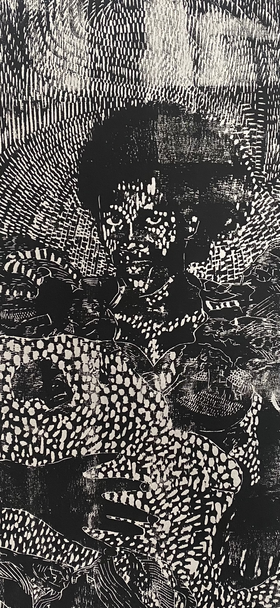

Pet sister Rest avec I had a dream in the privacy of my thoughts while I was sitting A father bought his daughter the best gift money could buy He had plenty of money, he came home with a pair of Pet sisters the same age as his daughter She never anticipated a gift like this But her father was wise and saw that his daughter was lonely So much money, too much, created a great distance between them and society. The father had so much possession among his best and most interesting were his burgundy colored people. Kept near the animal quarters, mostly chained, well supervised, isolated, aggressively and systematically tamed to minimize instances of rebellion or thoughts of rebellion. The twins were a year younger than the she. The father got them from his trusted vendor, who had witness their birth, and immediately after sold off their mother in exchange for older woman with just enough strength to do nothing but take care of the babies. When the older lady arrived in the compound, she was pulled to the side and gently given her assignment. With no complaint or side eye, she agreed, and asked where she would stay, there was a room reserved for her. She went and grabbed one of the babies, and asked someone to bring the other. The daughter was fascinated with the first sight. The pet sisters were deep dark red, same height, but a tiny shorter than her. She could not stop looking at them. And since the girls were agreeable, shy and scared, The daughter fell in love and took pleasure in their care. She was 7, they were six. Time passed, the daughter was shining with excitement of her new company. she was very aware that she was in control, and there was no boundary of what she could do with them. They were hers and her father told her so. Any resistance the twins posed against anything someone in the mansion wanted them to do was met with a slight electrocution, a quick pinch from a long pen. The manufacture marketed the pen as a humane disciplinary tool, guaranteed to keep any pet in line. The twins grew to learn to agree to the point that they were completely pleasant to everyone ever laid eyes on them. The guests marveled and could not stop looking at them, especially as a pair. As they grew, the father also grew more and more in love with the twins and was taking them away from his daughter in increasing frequency. He would have sessions with them in private, telling his daughter that he was teaching them important lessons. The daughter would protest claiming that she was already forbidden to teach them certain things she knew.
My head hurts Sun peaks in the middle of july I can taste the salty sweat on my cheeks Is this the pain of hard work? I am biking on the south side of the town Am bent forward to keep shadows on my feet But my neck is sunburned Like skin white My head hurts From all the noise of the day Mother with a bump forgot to drink some water I’ve got regrets From past events i never remembered She left me in the dumpster I can imagine I was crying, “come back you low life thief” “Come take care of me like you promised” I cried and cried Until they found me They put in a blanket, i stopped crying And they drove me to school The next day of school They told me to take the bus Get of my back I feel like raging Syrup toasty Char black face I work in the cave I dig tunnels I got a puffy hat
Today I was sad, but there’s no need to pay no mind. I am sad every day every day And everyday I smile, too I guess It’s always a regular day But the sadness feel more pronounced They feel that they are more part of me than the smiles The sadness are the ones I show less, I never show them more I think it healthier, well Everyone agrees that it’s healthier and everyone practices that it’s healthier to smile, to show the teeth and all, more than the sadness, more than the cries I do that too, Even tho I don’t smile more in pictures, I do show smiles, I dot show the opposite of sadness. Oh Since this is a diary, i guess, I can say, yes, sadness is a creeping thing that every day tries to overtake my identity My inside identity sadness takes over when dark my eyes are open When dreams are nowhere to be found and no one is in sight but that’s OK, I’m used to that. I think the problem becomes then when Am in a room full of people Yet I feel invisible I feel like I got a repellent potion, smelling all over me Am the cause, I I put on the potion lotion I put on the potion. I thought it was a sent. No , Apparently it was not. I have no way to verify this, or to confirm this by the eyes of people. Or by the results of my sadness and loneliness, maybe the potion is not working Maybe the stinky face people make upon seeing me Maybe they are the result of looking at me And seeing all the reclusion Am the cause of all this So then sadness takes a really powerful, powerful stance against the smiles Even in the moments when I get the courage to go out and be among the people I am still sad. I went out today as I do try to go out every week at least some point Because if I stay inside the whole time The sadness, it’s even 10 times fold, so people do help but I guess I should ask myself what am I really searching for something ? someone ? Yeah, of course I’m searching for someone, everyone is searching for someone. Someone that is already there someone they never seen Whatever, We are social beings, We only exist because someone found someone else it’s hard to play by yourself all that and all that and all that ! but why, whatever I have is not enough? Am I missing something? Or Am not satisfied? or am too greedy, to spoiled. The funny thing is, I I think the thing is, am Am good at isolation Am good at dwelling in isolation I tend to feel like it suits me, A lot of the time it suits me, It works out But Sometimes it doesn’t And when it doesnt Yeah I make an effort to go out to the crowd then see what’s going on and when I step into the crowd, I get shy, I don’t. Approach anyone, and it let’s off a sticky stinky smell And, am repellent At I hope talking about it helps me solve it.
today i smiled